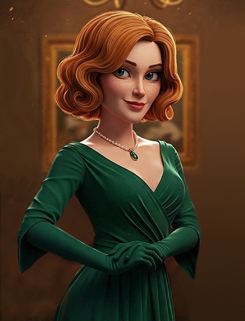

Ivy Green
Ivy Green is the neice of Professor Thistlewick, and shares an interest in botany.
"Well, Mother and I were here for a rare family dinner. Uncle doesn't agree to them too often, begging to be spared her lectures. But every
once in a while he'll agree and they'll bicker the whole evening. I spent dinner keeping my head down and we had just finished when the doorbell
rang. Mr Barnam was at the door, Uncle looked surprised to see him and he looked surprised to see us. Uncle intoduced us all and told him to wait
in the study.
We said goodnight and I went to the library to get some reading in before bed.
I always enjoyed talking to Uncle Thistle about his garden and what projects he's working on, but he never told me much about the Midnight Bloom.
I always wanted to know more but he insisted, I suspect there were secret research methods that went into it, as he never mentioned much of his
own research on the topic. I can't belive someone would burn such a unique orchid like Midnight!"